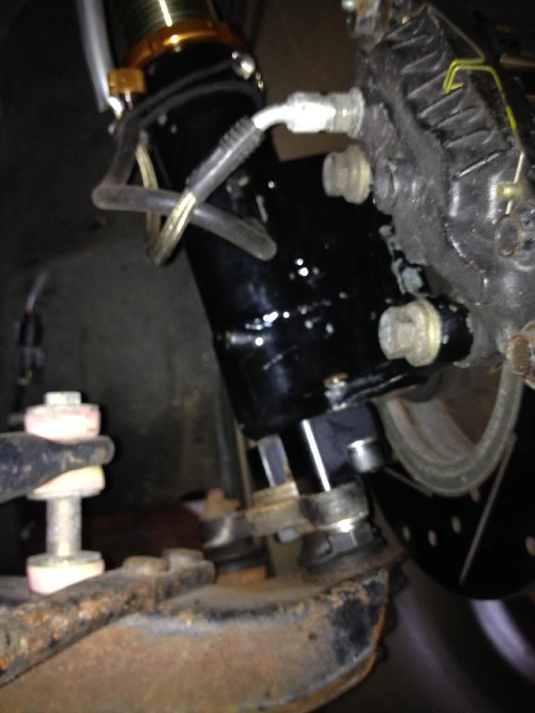

-
Pretty much as the title says. Car is an 84 turbo with 88t hubs, brakes, 84t cntrl arms, 84t spindles that are modified for stance coilovers with michelp modified steering knuckles. No heat shield right now.
It hits at all steering angles. I wanted to see if anyone else has these issues and if so, what did you do to fix it? I really don't want these brand new to be turned to make clearance. I thought about hammerring the ends of the control arms, but I'm afraid of bending them.
Note: control arms are boxed in and I have asco bump steer spacers -
Sad to say it's the bumpsteer spacers… my offset ones would work for you, they push the hub away from the control arm about 10-11mm
The shield at the back is for dust/rain/snow and things, not heat btw
-
How much are they and how osoon can I get a set? Other than wiring, this is one of the few things holding my project up. I could use some pics as well. -
Where did you get your bump steer spacers from Richter888 -
Asco -
PM'd -
Its a well known issue. In many cases the LCA outer lip can be ground off and give you the clearance you need. You can check out any of my build threads. I have done this to all my brake conversions.
However with modified steering knuckles, in extreme cases some completely rebuilt/fabricated the LCA around the ball joint.86na - BlueZ
Shiro #366 - Kouki Monster
85t - Mr Tickles -
I used G-E's BSS as my solution…I would recommend that. No cutting grinding or reinforcing needed on control arms then.Usual Z31 suspect: Garage Queen (aka broken)

-
How much grinding is needed? -
Sorry, I don't have my car "just out back" and I don't know my LCA's outer lip well enough. -
You can see the lip here:
http://z31performance.com/showthread…l=1#post158391________________
1987 Chumpcar -
Thank you. -
GE's RCA's will remedy the situation. Prior to installing his parts I had busted out the angle grinder and got busy. You may be able to see in this pic where it was ground off. Initially I was a bit concerned about the the remaining structural integrity of the metal which encircles the ball joint and checked it frequently for galling or looseness. However I drove like this for years with no ill effects, no track days but spirited driving on the twisties. And yes, this is a common issue with early control arms and 88T hubs....and many have grinded this area down.

-
That seems like a whole lot more than just a lip!

Copyright © 2006–. All rights reserved. Privacy Policy